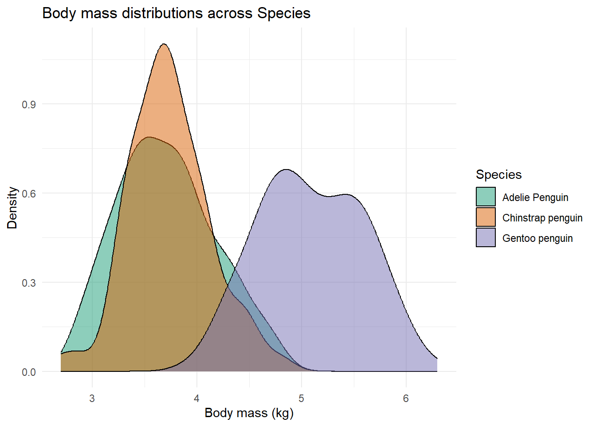
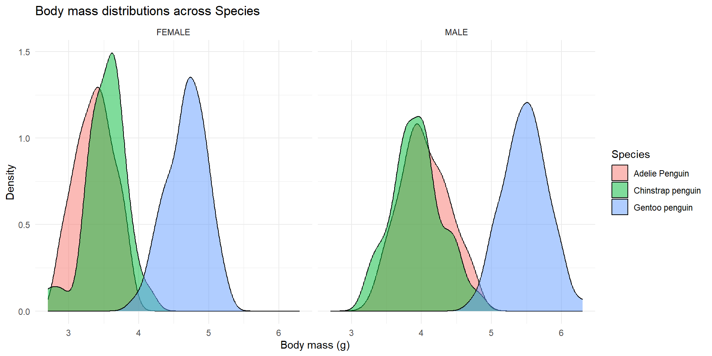
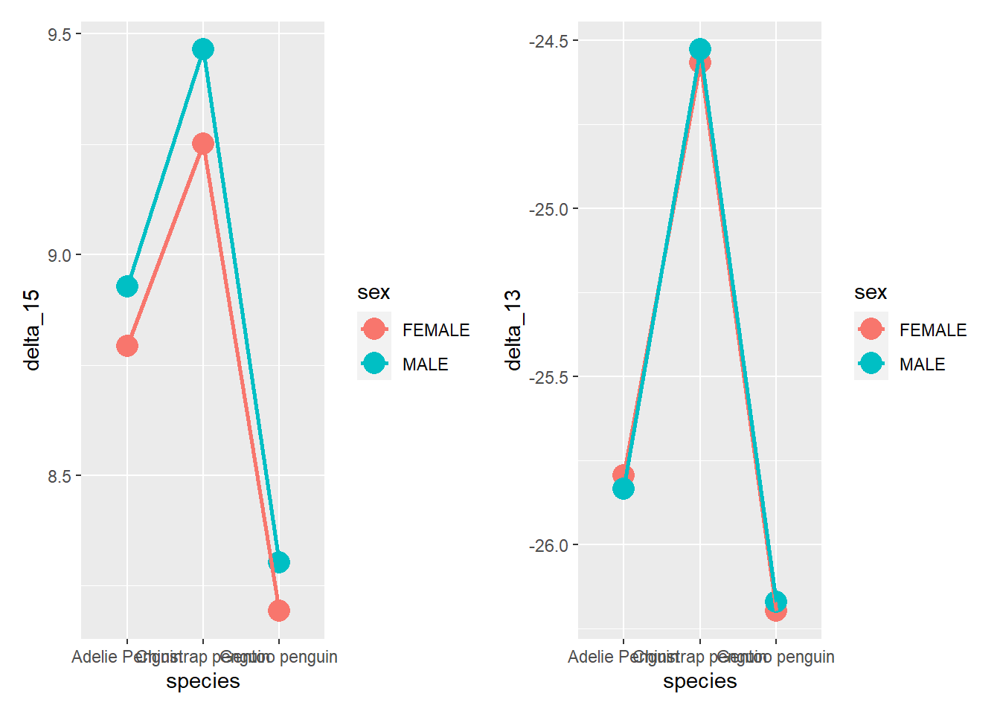
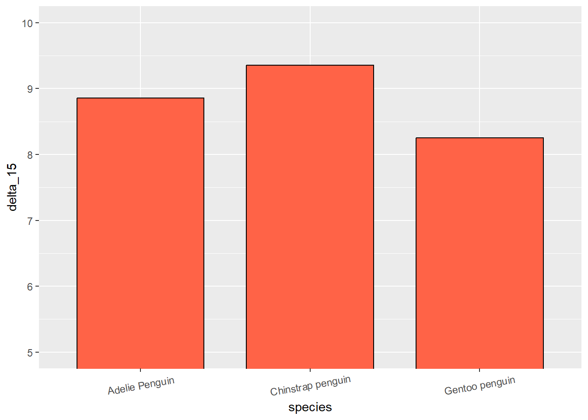

Chapter 5 Basic Statistical Analysis
Resources:
https://bookdown.org/mikemahoney218/IDEAR/basic-statistics-using-r.html
To cover:
In this chapter we will perform some basic statistical analyses on several distinct data sets. These analyses are just some examples that should get you going. The point here is to show you the syntax adopted by most analyses-related functions as well as to demonstrate how you need to prepare data, what the output looks like, etc.. Everything you will see will pretty much be the action part of the analysis plan, and not the whole exploration and full comprehension of the data that should precede any analysis. I will not be discussing the output of each analysis, only how to perform them. That latter part will be up to you, since you already have the know-how on how to read, wrangle, describe and visualize your data (Chapter 1, 2 and 3).
Thus, this is by no means a detailed guide on how to analyse data. That would require an entire book on itself. So remember, this is just a “demo” and not the entire game. I will make sure, however, to leave some references for each topic if you are interested in better understanding and applying these analyses methods yourself. At the end you will have some more general recommendations for a full “intro to analysis with R” type of books/guides.
Disclaimer: I am not (by no means) a statistical expert, and some of the explanations used here, albeit brief and simple, might oversimplify or even outright give you a wrong idea about the analysis. I advise you to carefully read about the analysis you plan to perform and not just rely on this guide for that purpose.
Now, why use R? Why not just manipulate the data however you like and then save it as a “.csv” and read it in SPSS (or any other statistical analysis program). Well, there are several reasons…
1: It does not cut your workflow.
2: It records every step you take in the analysis.
3: It provides a sharable report for others to see and execute the code themselves.
4: It has more (way more) ways for you to analyze data.
5: It makes you understand (at least a bit more) what you are doing.
5.1 Correlations
Correlations tests, as you might already know, measure covariance between variables (strength of association), indicating if there is a positive or negative relationship between them.
There are several types, but I will focus here on the two (well three) most common ones:
Pearson r correlation (Parametric): Measures the linear dependence between two variables (x and y).
Spearman rho AND Kendall tau correlation (Non-parametric): Computes the correlation between the rankings of variable x and y.
There are several built-in commands/functions to perform correlations in R. These are cor(), cor.test(). There are slight differences between them, since cor() does not provide any p-values, but works for multiple comparisons, and cor.test() provides p-values, but does not work for multiple comparisons. There are definitely more functions to calculate different correlation indexes and with more features, but these are the simpler ones and do not require you to install any package to perform them.
To show off some examples of correlation, we will use a data set “Ginzberg” from the carData package, which containing data about psychiatric patients hospitalized with depression.
d <- as_tibble(carData::Ginzberg)
head(d)## # A tibble: 6 × 6
## simplicity fatalism depression adjsimp adjfatal adjdep
## <dbl> <dbl> <dbl> <dbl> <dbl> <dbl>
## 1 0.930 0.356 0.599 0.759 0.107 0.419
## 2 0.911 1.18 0.728 0.727 0.999 0.517
## 3 0.534 -0.0584 0.534 0.622 0.0381 0.707
## 4 0.741 0.356 0.566 0.835 0.422 0.656
## 5 0.534 0.770 0.502 0.477 0.814 0.535
## 6 0.628 1.39 0.566 0.407 1.23 0.340We can choose to selectively correlate two variables, like for instance fatalism with depression
# Plot
d %>%
ggplot(aes(fatalism, depression)) +
geom_point() +
geom_smooth(method = 'lm', formula = 'y ~ x')
# Correlation test
cor.test(d$fatalism, d$depression)##
## Pearson's product-moment correlation
##
## data: d$fatalism and d$depression
## t = 7.8024, df = 80, p-value = 1.97e-11
## alternative hypothesis: true correlation is not equal to 0
## 95 percent confidence interval:
## 0.5136315 0.7652141
## sample estimates:
## cor
## 0.6573674Alternatively we can quickly explor all correlations within a data set
# Simple descripite measure
cor(d[,1:6])## simplicity fatalism depression adjsimp adjfatal adjdep
## simplicity 1.0000000 0.6312820 0.6432668 0.8828320 0.4739231 0.5055916
## fatalism 0.6312820 1.0000000 0.6573674 0.4762675 0.8871990 0.5155501
## depression 0.6432668 0.6573674 1.0000000 0.5240324 0.5317250 0.9150317
## adjsimp 0.8828320 0.4762675 0.5240324 1.0000000 0.5368211 0.5726930
## adjfatal 0.4739231 0.8871990 0.5317250 0.5368211 1.0000000 0.5810994
## adjdep 0.5055916 0.5155501 0.9150317 0.5726930 0.5810994 1.0000000# Simple graphic version
pairs(d)
# More elaborate version
library(GGally)
ggpairs(d)You can also split the correlation by groups. Here’s how.
# Adding a generic group variable
group <- sample(c('A', 'B'), nrow(d), replace=TRUE)
d$group <- group
# Correlation plots
ggpairs(d[, c(1,2,3,7)],
aes(color = group))## `stat_bin()` using `bins = 30`. Pick better value with `binwidth`.
## `stat_bin()` using `bins = 30`. Pick better value with `binwidth`.
## `stat_bin()` using `bins = 30`. Pick better value with `binwidth`.
Lastly, we can correlate all other variables with one of our choosing.
# Naming cols
cols <- colnames(d)[c(1,2,4,5,6)]
# d to dataframe (cor.test is picky)
d <- as.data.frame(d)
# Iterate over all combinations
for (col in cols){
cor <- unlist(cor.test(d$depression, d[, col]))
cor_value <- round(as.numeric(cor[4]), 3)
cor_pvalue <- round(as.numeric(cor[3]), 3)
if (cor_pvalue == 0){
cor_pvalue = '<0.001'
}
cat('\nCorrelation between Depression and', col, ': ', cor_value, ', with p-value:', cor_pvalue)
}##
## Correlation between Depression and simplicity : 0.643 , with p-value: <0.001
## Correlation between Depression and fatalism : 0.657 , with p-value: <0.001
## Correlation between Depression and adjsimp : 0.524 , with p-value: <0.001
## Correlation between Depression and adjfatal : 0.532 , with p-value: <0.001
## Correlation between Depression and adjdep : 0.915 , with p-value: <0.001Now all of the correlation we have seen so far have been between two continuous variables, and we thus always employed a Pearson correlation test. To perform other correlations, just choose which method you want with the method argument inside the cor.test() function. You can choose between “pearson” (default), “kendall” or “spearman”.
For more information about correlations in R I recommend you read the following:
- www.sthda.com/english/wiki/correlation-test-between-two-variables-in-r
- https://statsandr.com/blog/correlation-coefficient-and-correlation-test-in-r/#for-2-variables
5.2 Linear Regressions
So linear regression (LR) are a statistical method used to model a relationship between a dependent (outcome) variable and independent (predictors) variables by fitting a linear equation to the observed data. We can use it to study understand the relationship between these variables or predict future (yet unobserved) values.
The basic syntax for LR in R is as follows: lm(y ~ x, data = d). lm stands for linear model. y will be our outcome variable and x our predictor. You can interpret ~ here and in the following analysis as “predicted by”.
Lets look at a couple of examples. To do this we are going to load the data “Soils” from the carData package. This data concerns soil characteristics measured on samples. We will assume “pH” is our outcome/dependent variable.
d <- carData::Soils
m <- lm(pH ~ Depth, data = d)
m##
## Call:
## lm(formula = pH ~ Depth, data = d)
##
## Coefficients:
## (Intercept) Depth10-30 Depth30-60 Depth60-90
## 5.3975 -0.3933 -1.1192 -1.4000Now if you call the model you created (here labeled as “m”) it prints only a very small output with the coefficients of the equation only. You can get a more detailed view of everything using the command summary() or something more concise with anova() or car::Anova().
summary(m)##
## Call:
## lm(formula = pH ~ Depth, data = d)
##
## Residuals:
## Min 1Q Median 3Q Max
## -0.54417 -0.23250 -0.08083 0.15500 1.66583
##
## Coefficients:
## Estimate Std. Error t value Pr(>|t|)
## (Intercept) 5.3975 0.1089 49.585 < 2e-16 ***
## Depth10-30 -0.3933 0.1539 -2.555 0.0142 *
## Depth30-60 -1.1192 0.1539 -7.270 4.60e-09 ***
## Depth60-90 -1.4000 0.1539 -9.094 1.15e-11 ***
## ---
## Signif. codes: 0 '***' 0.001 '**' 0.01 '*' 0.05 '.' 0.1 ' ' 1
##
## Residual standard error: 0.3771 on 44 degrees of freedom
## Multiple R-squared: 0.7051, Adjusted R-squared: 0.685
## F-statistic: 35.07 on 3 and 44 DF, p-value: 9.811e-12anova(m)## Analysis of Variance Table
##
## Response: pH
## Df Sum Sq Mean Sq F value Pr(>F)
## Depth 3 14.9590 4.9863 35.068 9.811e-12 ***
## Residuals 44 6.2563 0.1422
## ---
## Signif. codes: 0 '***' 0.001 '**' 0.01 '*' 0.05 '.' 0.1 ' ' 1car::Anova(m)## Anova Table (Type II tests)
##
## Response: pH
## Sum Sq Df F value Pr(>F)
## Depth 14.9590 3 35.068 9.811e-12 ***
## Residuals 6.2563 44
## ---
## Signif. codes: 0 '***' 0.001 '**' 0.01 '*' 0.05 '.' 0.1 ' ' 1Now its not the focus of this book to explain all the content of the output. If you ever performed a similar analysis in SPSS then you should, by looking careful, finding everything you need.
Now, linear regression has a few assumptions that you probably would like to assure. These are:
1 - Linearity: The relationship between the independent and dependent variables is linear. 2 - Independence: The observations are independent of each other. 3 - Homoscedasticity: The variance of the errors is constant across all levels of the independent variable(s) 4 - Normality: The errors are normally distributed. 5 - Independence of errors: The errors are independent of the independent variable(s)
Again, these are beside the point of the guide, but if you want to check them, here is a quick way around a few of the most pertinent points.
# Homoscedasticity
plot(m$residuals ~ m$fitted.values)
## Or with ggplot
t <- data.frame(m$residuals, m$fitted.values)
t %>%
ggplot(aes(m.fitted.values, m.residuals)) +
geom_point()
# Normality
plot(density(m$residuals))
## Or with ggplot
t %>%
ggplot(aes(m.residuals)) +
geom_density()
With your model you can then make predictions, of course. To do this you use the command predict. Lets create a different model first with a continuous predictor
# New model
m <- lm(pH ~ Na, data = d)
# Creating a data frame with several predictor variables we wish to now the predictions too.
pd <- data.frame(Na = c(1, 3.5, 7, 8.2, 10))
# Predicting
predict(m, pd)## 1 2 3 4 5
## 5.320747 4.966709 4.471054 4.301116 4.046208Lastly, lets plot our model.
# Creating a dummy range of Na values.
na_values <- seq(range(d$Na)[1], range(d$Na)[2], 0.5)
plt_data <- data.frame(Na = na_values)
# Generating predictions with prediction confidence intervals
plt_data$predictions <- predict(m, plt_data, se.fit = TRUE, interval = 'prediction', level = .95)$fit[, 1]
plt_data$lwr <- predict(m, plt_data, se.fit = TRUE, interval = 'prediction', level = .95)$fit[, 2]
plt_data$upr <- predict(m, plt_data, se.fit = TRUE, interval = 'prediction', level = .95)$fit[, 3]
# Plotting
plt_data %>%
ggplot(aes(Na, predictions)) +
geom_point() +
geom_line(aes(group = 1)) +
geom_ribbon(aes(ymin = lwr, ymax = upr), alpha = 0.1) +
coord_cartesian(ylim = c(2, 8))
Linear regressions are one of the fundamental pillars of statistics. Nearly all statistical analyses are variations of linear regressions. I encourage you to truly understand them as it will give you more confidence when trying to perform any of the analyses shown below. Here are a few resources:
- https://www.spiceworks.com/tech/artificial-intelligence/articles/what-is-linear-regression/ (Just on linear regression)
- https://www.datacamp.com/tutorial/linear-regression-R
- https://www.tutorialspoint.com/r/r_linear_regression.htm
5.2.1 T-tests
T-tests, used two compare two samples, are also easily done with just base R. You have the following options:
One sample (for, as an example, a mean of 2)
t.test(y, mu = 2)Independent samples (samples not related to each other)
t.test(y ~ x)(Syntax wide)t.test(y1, y2)(Syntax long)Paired samples (samples related in some way to each other - e.g., from the same ID but different conditions)
t.test(y1, y2, paired=TRUE)
Lets proceed to some basic examples with the Soils data set from the carData package. This data set depicts soil characteristics that were measured on sample from three types of contours and four depths. The area was also divided into four blocks.
Needless to say the assumptions of the linear regression also hold for the t-tests and ANOVAs, so you should check them out first. But, for the purpose of demonstration, lets skip this and get to the point.
So one question, even if it doesn’t entirely makes sense (or at all), is if Density of the samples is different from 1.
d <- carData::Soils
t.test(d$Dens, mu = 1)##
## One Sample t-test
##
## data: d$Dens
## t = 9.9572, df = 47, p-value = 3.678e-13
## alternative hypothesis: true mean is not equal to 1
## 95 percent confidence interval:
## 1.252023 1.379644
## sample estimates:
## mean of x
## 1.315833Now, we may want to know if a Top contour is different from a Slope contour in terms of pH values.
For that we can use a independent-sample t-test. As I showed above, you can use two different syntaxes, with the result, of course, being exactly the same. The choice of syntax usually depends on how your data is structured. If in a long format (such as in this data set) we usually just use the second type of syntax (t.test(y1, y2)). If in a wide format we typically use the first syntax (y ~ x). Still, as long as you prepare your data, you can use whatever format you want.
# Syntax wide
t.test(d[d$Contour == 'Top', 'pH'], d[d$Contour == 'Slope', 'pH'])##
## Welch Two Sample t-test
##
## data: d[d$Contour == "Top", "pH"] and d[d$Contour == "Slope", "pH"]
## t = -0.67156, df = 27.412, p-value = 0.5075
## alternative hypothesis: true difference in means is not equal to 0
## 95 percent confidence interval:
## -0.7143742 0.3618742
## sample estimates:
## mean of x mean of y
## 4.57000 4.74625# Syntax long
d_test <- d[d$Contour %in% c('Top', 'Slope'),] # subsetting the data with these two types of contour
t.test(pH ~ Contour, data = d_test)##
## Welch Two Sample t-test
##
## data: pH by Contour
## t = 0.67156, df = 27.412, p-value = 0.5075
## alternative hypothesis: true difference in means between group Slope and group Top is not equal to 0
## 95 percent confidence interval:
## -0.3618742 0.7143742
## sample estimates:
## mean in group Slope mean in group Top
## 4.74625 4.57000Now all of these were examples of independent t-tests. To do a paired-samples (dependent) t-test you just have to use paired = TRUE within the function.
Now the data we used is not dependent/related in any manner. As such, lets use a different data set that features dependent/paired data. For this we will use the data set “ChickWeight” that is pre-installed in R. This data describes how time impact the weight gain by chickens considering different diets. Although the type of diet is not paired (only one diet is explored per chicken) the time intervals are measured per chick (each chicken is measured across several time intervals). We are going to work only with the first and second time measurements.
# Loading our data frame
d <- ChickWeight
# Messing up with the data so that we can work on a simple example
d <- d %>%
filter(Time == 0 | Time == 2) %>%
mutate(Time = ifelse(Time == 0, 'InitialEvaluation', 'FinalEvaluation'))
head(d)## Grouped Data: weight ~ Time | Chick
## weight Time Chick Diet
## 1 42 InitialEvaluation 1 1
## 2 51 FinalEvaluation 1 1
## 3 40 InitialEvaluation 2 1
## 4 49 FinalEvaluation 2 1
## 5 43 InitialEvaluation 3 1
## 6 39 FinalEvaluation 3 1t.test(weight ~ Time, data = d, paired = TRUE)##
## Paired t-test
##
## data: weight by Time
## t = 15.907, df = 49, p-value < 2.2e-16
## alternative hypothesis: true mean difference is not equal to 0
## 95 percent confidence interval:
## 7.129123 9.190877
## sample estimates:
## mean difference
## 8.165.2.2 Anovas
(Very) Simply put, ANOVAs are used to compare groups with more than two-levels. So previously in the t-test examples we only compared two-groups. Either 1 level against a mean value, or two levels between themselves.
Now, if we want to assess if the type of contour differs in their pH level we can simply perform an anova. There are definitely more ways to perform ANOVAs, but for sake of brevity, I’ll just leave with the aov() way.
# Loading our data frame
d <- carData::Soils
# Analysis
oneway_anova <- aov(pH ~ Contour, data = d)
summary(oneway_anova) # asks for the summary## Df Sum Sq Mean Sq F value Pr(>F)
## Contour 2 0.261 0.1303 0.28 0.757
## Residuals 45 20.955 0.4657Once more, we performed a one-way (Just 1 factor, which in this case is Contour) independent sample anova. To perform two-way or even more, we could just add more factors such as aov(y ~ factor1 + factor2, data = d). Let me exemplify below so I can also you show how you test for interaction between factors in a two-way ANOVA.
twoway_anova <- aov(pH ~ Contour*Block, data = d)
summary(twoway_anova)## Df Sum Sq Mean Sq F value Pr(>F)
## Contour 2 0.261 0.1303 0.274 0.762
## Block 3 1.232 0.4108 0.862 0.470
## Contour:Block 6 2.568 0.4280 0.898 0.507
## Residuals 36 17.154 0.4765The * between the two factors, signifies “interaction”.
Lastly, you may want to perform a paired samples ANOVA. In this case you can’t simply say paired = TRUE. Here you need a different function. I’m going to introduce you two new ways to perform a repeated-measures (or independent) ANOVA.
library(rstatix) # for anova_test()##
## Attaching package: 'rstatix'## The following object is masked from 'package:stats':
##
## filterlibrary(ez) # for the ezANOVA()
rep.anova1 <- anova_test(data = d, dv = pH, wid = Group, within = Block)
rep.anova1## ANOVA Table (type III tests)
##
## $ANOVA
## Effect DFn DFd F p p<.05 ges
## 1 Block 3 33 3.192 0.036 * 0.058
##
## $`Mauchly's Test for Sphericity`
## Effect W p p<.05
## 1 Block 0.069 9.95e-05 *
##
## $`Sphericity Corrections`
## Effect GGe DF[GG] p[GG] p[GG]<.05 HFe DF[HF] p[HF] p[HF]<.05
## 1 Block 0.417 1.25, 13.78 0.089 0.446 1.34, 14.7 0.086# Or
rep.anova2 <- ezANOVA(data = d, dv = pH, wid = Group, within = Block)
rep.anova2## $ANOVA
## Effect DFn DFd F p p<.05 ges
## 2 Block 3 33 3.191956 0.0362248 * 0.05809364
##
## $`Mauchly's Test for Sphericity`
## Effect W p p<.05
## 2 Block 0.0690423 9.949466e-05 *
##
## $`Sphericity Corrections`
## Effect GGe p[GG] p[GG]<.05 HFe p[HF] p[HF]<.05
## 2 Block 0.4174896 0.08941906 0.4455701 0.085629935.2.2.1 Post-hocs
Lastly, I would like to briefly introduce a way for you to perform post-hocs. Post-hoc tests are the follow-up on ANOVAs where you investigate which exact groups present a difference. So say for instance that our previous twoway_anova tells us that the type of Contour shows a statistically significant change over pH (I know it doesn’t, so just pretend). Now, you may want to know which contour do exactly differ between themselves in terms of pH values.
For that we will use the emmeans package and base functions such as pairs()and contrast(). There are many other ways to obtain post-hocs, some may be simpler but more specific, but, as an example, I’ll demonstrate one of the most versatile (i.e., emmeans). This allows you to do post-hoc test for many types of linear, generalized linear models and mixed models. Given its vast applicability, it sometimes may be a bit confusing in how to extract the post-hoc tests for your model the way you want. For that you can consult its help vignette here:
https://cran.r-project.org/web/packages/emmeans/vignettes/basics.html#contents
This function
library(emmeans) # stands for estimated marginal means##
## Attaching package: 'emmeans'## The following object is masked from 'package:GGally':
##
## pigssummary(twoway_anova)## Df Sum Sq Mean Sq F value Pr(>F)
## Contour 2 0.261 0.1303 0.274 0.762
## Block 3 1.232 0.4108 0.862 0.470
## Contour:Block 6 2.568 0.4280 0.898 0.507
## Residuals 36 17.154 0.4765emm <- emmeans(object = twoway_anova,
specs = ~ Contour*Block,
by = 'Contour',
type = 'response',
adjust = 'bonferroni')
pairs(emm)## Contour = Depression:
## contrast estimate SE df t.ratio p.value
## Block1 - Block2 -0.3525 0.488 36 -0.722 0.8876
## Block1 - Block3 -0.3000 0.488 36 -0.615 0.9268
## Block1 - Block4 -0.6550 0.488 36 -1.342 0.5431
## Block2 - Block3 0.0525 0.488 36 0.108 0.9995
## Block2 - Block4 -0.3025 0.488 36 -0.620 0.9251
## Block3 - Block4 -0.3550 0.488 36 -0.727 0.8855
##
## Contour = Slope:
## contrast estimate SE df t.ratio p.value
## Block1 - Block2 -0.2725 0.488 36 -0.558 0.9437
## Block1 - Block3 -0.2500 0.488 36 -0.512 0.9557
## Block1 - Block4 -1.0225 0.488 36 -2.095 0.1742
## Block2 - Block3 0.0225 0.488 36 0.046 1.0000
## Block2 - Block4 -0.7500 0.488 36 -1.537 0.4270
## Block3 - Block4 -0.7725 0.488 36 -1.583 0.4010
##
## Contour = Top:
## contrast estimate SE df t.ratio p.value
## Block1 - Block2 -0.1050 0.488 36 -0.215 0.9964
## Block1 - Block3 0.2250 0.488 36 0.461 0.9670
## Block1 - Block4 0.3900 0.488 36 0.799 0.8544
## Block2 - Block3 0.3300 0.488 36 0.676 0.9055
## Block2 - Block4 0.4950 0.488 36 1.014 0.7423
## Block3 - Block4 0.1650 0.488 36 0.338 0.9865
##
## P value adjustment: tukey method for comparing a family of 4 estimatescontrast(emm)## Contour = Depression:
## contrast estimate SE df t.ratio p.value
## Block1 effect -0.3269 0.299 36 -1.094 0.5628
## Block2 effect 0.0256 0.299 36 0.086 0.9322
## Block3 effect -0.0269 0.299 36 -0.090 0.9322
## Block4 effect 0.3281 0.299 36 1.098 0.5628
##
## Contour = Slope:
## contrast estimate SE df t.ratio p.value
## Block1 effect -0.3862 0.299 36 -1.292 0.4090
## Block2 effect -0.1138 0.299 36 -0.381 0.7058
## Block3 effect -0.1363 0.299 36 -0.456 0.7058
## Block4 effect 0.6362 0.299 36 2.129 0.1608
##
## Contour = Top:
## contrast estimate SE df t.ratio p.value
## Block1 effect 0.1275 0.299 36 0.427 0.7462
## Block2 effect 0.2325 0.299 36 0.778 0.7462
## Block3 effect -0.0975 0.299 36 -0.326 0.7462
## Block4 effect -0.2625 0.299 36 -0.878 0.7462
##
## P value adjustment: fdr method for 4 testsYou can change your by parameters to adjust what comparisons you want in the pairs and contrast functions. I recommend you manipulate this to really understand its inner workings.
As for the difference between the two functions (i.e., pairs and contrasts):
- pairs -> Performs all pairwise comparisons
- contrast -> Used to test specific comparisons/hypotheses
If they are pairwise comparisons you should instead say (in this example) pairwise ~ Contour * Block.
5.3 Generalized Linear Regression
When you have a outcome variable in which its error distribution of its model is not normally distributed, i.e., outcomes such counts or yes/no answers, you should use a generalized linear regression (GLM). It has a link function that allows you to model the relationship between the predictor variables and the response variable in the same fashion as a linear regression. Again this is very briefly and simply put, I encourage you to explore more on your own.
Now, GLMs are aptly executed in R with the function glm()
We are going to take on an example from the CES11 database (carData package) which a 2011 Canadian poll on abortion. Here people could vote on weather abortion should be banned (‘Yes’) or not (‘No’). Before performing our GLM we need to first convert the YES/NO answers to 0 and 1 values. Which is which doesn’t really matter (only matter for the interpretation of the estimate). Since this is a A or B type of response, we will use the binomial family to model the data.
d <- carData::CES11
# Recoding
d <- d %>%
mutate(abortion01 = ifelse(abortion == 'Yes', 1, 0))
# GLM
m <- glm(abortion01 ~ gender, family = 'binomial', data = d)
# Interpretation/Summary
summary(m)##
## Call:
## glm(formula = abortion01 ~ gender, family = "binomial", data = d)
##
## Deviance Residuals:
## Min 1Q Median 3Q Max
## -0.6425 -0.6425 -0.6365 -0.6365 1.8418
##
## Coefficients:
## Estimate Std. Error z value Pr(>|z|)
## (Intercept) -1.47295 0.07279 -20.235 <2e-16 ***
## genderMale -0.02064 0.10984 -0.188 0.851
## ---
## Signif. codes: 0 '***' 0.001 '**' 0.01 '*' 0.05 '.' 0.1 ' ' 1
##
## (Dispersion parameter for binomial family taken to be 1)
##
## Null deviance: 2137.6 on 2230 degrees of freedom
## Residual deviance: 2137.6 on 2229 degrees of freedom
## AIC: 2141.6
##
## Number of Fisher Scoring iterations: 4Once more, there are many parameters you can tune, other functions you can use, and other families you can model. This is just the more widely known function and most simple example.
5.4 Linear Mixed Models
Now, it is far beyond the scope of this brief book to explain to you what linear mixed models (LMMs) are. Firstly, they are known by many names (just see https://en.wikipedia.org/wiki/Multilevel_model). In linear mixed models you can specify both fixed and random effects. Fixed effects are your usual predictor variables that have systematic effects on your outcome (e.g., treatment manipulations). Random effects are those that have stochastic (random) effect on your outcome, since these are selected randomly. For instance, lets say you plan on exploring if aggressive words, compared to neutral words, cause people to have increased heart-rate. For this you would need to select a random sample of aggressive words and neutral words, since there is no way you could expose your participants to all aggressive or neutral words. These can thus be considered a random variable. Usually, IDs of the participants themselves are seen as random effects, since the participants introduce some random (unpredictable) variability (different sample of 1000 participant will lead to slightly different results). And by this I mean each word (the ID of each word), not the category of the word (the category is a fixed variable). You also can (need) to specify the structure of these random effects in a correct manner, namely which effects are nested or crossed and their respective structure. Now, I’m sorry if this doesn’t make any sense, but the purpose here is to introduce you to a brief example of LMMs in R and I must skip with a detailed explanation. If it makes you feel any better, the distinction between random and fixed effects is still debated even among top statisticians. There are many more topics to cover for you to understand properly a LMM (even I don’t think I understand all of them), but we’ll stop here.
To perform LMMs I will use the lmer() function from the lme4 package. We will use the sleepstudy data from lme4 package. This data is from an experiment related to how sleep deprivation impairs reaction times. In this data participants were trained on the first two days (day 0 and 1) and began the experiment on day 2 (baseline).
library(lme4)## Loading required package: Matrix##
## Attaching package: 'Matrix'## The following objects are masked from 'package:tidyr':
##
## expand, pack, unpackd <- lme4::sleepstudy
# Preparing the data adjusting for deprivation days
d <- d %>%
filter(!(Days %in% c(0, 1))) %>%
mutate(Days = Days - 2) %>%
mutate(Days = as.factor(Days))
lmm <- lmer(Reaction ~ Days + (1|Subject), data = d)
car::Anova(lmm)## Analysis of Deviance Table (Type II Wald chisquare tests)
##
## Response: Reaction
## Chisq Df Pr(>Chisq)
## Days 107.17 7 < 2.2e-16 ***
## ---
## Signif. codes: 0 '***' 0.001 '**' 0.01 '*' 0.05 '.' 0.1 ' ' 1# Post-hocs
library(emmeans)
emm <- emmeans(object = lmm,
specs = pairwise ~ Days,
type = 'response',
adjust = 'bonferroni',
contr = list(Days = "dummy"))
pairs(emm)[1:7]## I bet you wanted to call this with just object[[1]] - use '[[]]' or which' if I'm wrong.
## See '? emm_list' for more information## Note: adjust = "tukey" was changed to "sidak"
## because "tukey" is only appropriate for one set of pairwise comparisons## contrast estimate SE df t.ratio p.value
## Days0 - Days1 -17.6 10.2 119 -1.723 0.4728
## Days0 - Days2 -23.3 10.2 119 -2.277 0.1600
## Days0 - Days3 -43.2 10.2 119 -4.219 0.0003
## Days0 - Days4 -46.8 10.2 119 -4.577 0.0001
## Days0 - Days5 -53.4 10.2 119 -5.219 <.0001
## Days0 - Days6 -71.3 10.2 119 -6.967 <.0001
## Days0 - Days7 -85.5 10.2 119 -8.357 <.0001
##
## Degrees-of-freedom method: kenward-roger
## P value adjustment: sidak method for 7 tests5.5 Generalized Linear Mixed Models
Much like generalized linear models, Generalized Linear Mixed Models (GLMMs) allow us to model data that doens’t follow a linear trend, like binary data or count data.
To perform GLMMs I will use the glmer() function from the same lme4 package. We will use the MplsStops data from carData package. This data set contains the results of nearly all stops made by the Minneapolis Police Department for the year 2017. I’m interested in exploring if more stops are made for Black compared with White people. Since these have been collected by different precincts and different neighborhoods, I can use them too to help explain variability in the data. Obviously this is just an example, since firstly, the data should be adjusted towards the number of White and Black people living in these areas, but it serves as a base example.
d <- carData::MplsStops
# Isolating Black/White people and preparing data
d <- d %>%
mutate(race = as.character(race)) %>%
filter(race %in% c('Black', 'White')) %>%
mutate(race = as.factor(race)) %>%
group_by(policePrecinct, neighborhood, race) %>%
dplyr::summarise(Stops = n())## `summarise()` has grouped output by 'policePrecinct', 'neighborhood'. You can
## override using the `.groups` argument.d %>%
head()## # A tibble: 6 × 4
## # Groups: policePrecinct, neighborhood [3]
## policePrecinct neighborhood race Stops
## <int> <fct> <fct> <int>
## 1 1 Cedar Riverside Black 140
## 2 1 Cedar Riverside White 80
## 3 1 Downtown East Black 49
## 4 1 Downtown East White 81
## 5 1 Downtown West Black 1367
## 6 1 Downtown West White 780glmm <- glmer(Stops ~ race + (1|policePrecinct),
family = 'poisson', data = d)
car::Anova(glmm)## Analysis of Deviance Table (Type II Wald chisquare tests)
##
## Response: Stops
## Chisq Df Pr(>Chisq)
## race 456.84 1 < 2.2e-16 ***
## ---
## Signif. codes: 0 '***' 0.001 '**' 0.01 '*' 0.05 '.' 0.1 ' ' 1